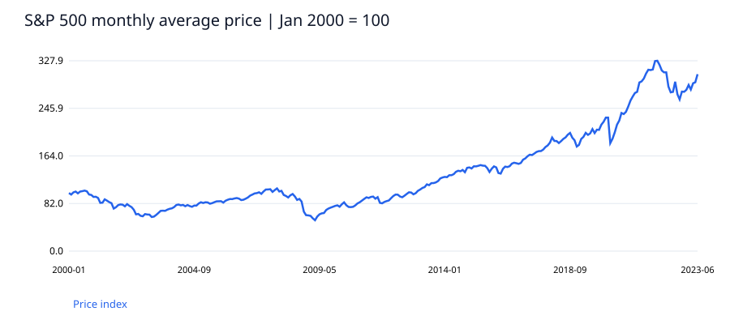
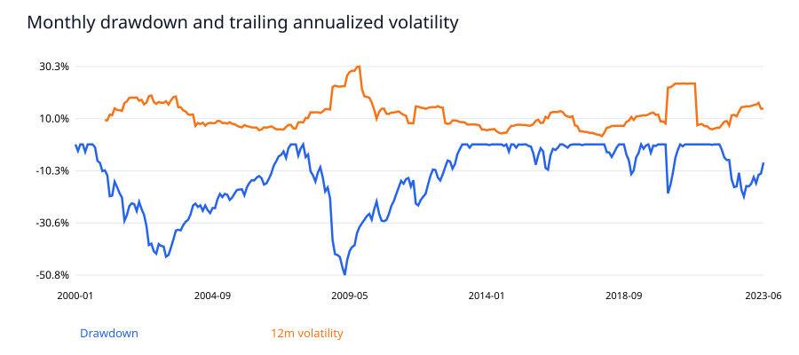

観測月数282
累積価格リターン204.8%
年率換算成長率4.9%
年率換算ボラティリティ13.1%
月次最大ドローダウン-50.8%
主要な発見
累積価格リターンは204.8%、年率換算成長率は4.9%。一方、月次観測の最大ドローダウンは-50.8%であり、成長率だけではリスクを説明できない。
最大下落のピーク月は2007-10、ボトム月は2009-03。同じ月平均価格を上回る回復月は2013-03。開始月より前の最高値は含まないため、期間に依存する。
率はパーセント表示。解決日数は暦日。定義はデータ辞書とREADMEを参照。


SQLによる検証結果
| year |
return_observations |
mean_monthly_return |
worst_month |
| 2000 |
11 |
-0.0059 |
-0.0531 |
| 2001 |
12 |
-0.0112 |
-0.1136 |
| 2002 |
12 |
-0.0189 |
-0.1089 |
| 2003 |
12 |
0.0159 |
-0.0656 |
| 2004 |
12 |
0.0090 |
-0.0270 |
| 2005 |
12 |
0.0044 |
-0.0277 |
| 2006 |
12 |
0.0098 |
-0.0286 |
| 2007 |
12 |
0.0040 |
-0.0495 |
| 2008 |
12 |
-0.0404 |
-0.2039 |
| 2009 |
12 |
0.0211 |
-0.0697 |
| 2010 |
12 |
0.0100 |
-0.0604 |
| 2011 |
12 |
0.0009 |
-0.1056 |
| 2012 |
12 |
0.0116 |
-0.0326 |
| 2013 |
12 |
0.0203 |
-0.0128 |
| 2014 |
12 |
0.0109 |
-0.0281 |
| 2015 |
12 |
0.0003 |
-0.0468 |
| 2016 |
12 |
0.0080 |
-0.0660 |
| 2017 |
12 |
0.0144 |
-0.0032 |
| 2018 |
12 |
-0.0026 |
-0.0573 |
| 2019 |
12 |
0.0182 |
-0.0329 |
| 2020 |
12 |
0.0151 |
-0.1907 |
| 2021 |
12 |
0.0199 |
-0.0019 |
| 2022 |
12 |
-0.0139 |
-0.0799 |
| 2023 |
6 |
0.0180 |
-0.0272 |
意思決定への提案
収益率とドローダウンを同じ画面で確認する。次の検証では配当込み指数と円換算系列を追加し、比較期間を統一する。売買判断の推奨は行わない。
解釈の範囲
2000年1月から2023年6月までの公開月次データ。月平均価格の比較であり、月末終値・日次リスク・配当込み収益ではない。手数料、税、為替を含まない。投資戦略のバックテストや将来予測は実施していない。2023年7月以降はソースの構成が変わるため分析対象外。